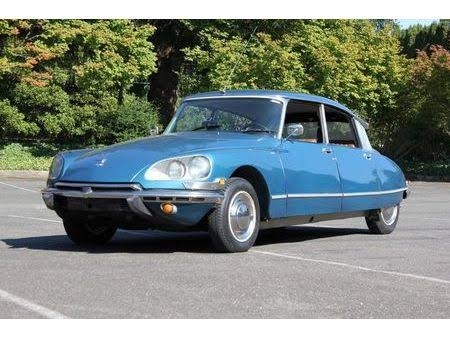

Локации · Реквизит · Экспонаты
Как снимали сериал
Действие сериала в основном происходит в Сакраменто, штат Калифорния (где находится штаб-квартира КБР), но большая часть съемок проходила в студийных павильонах Лос-Анджелеса.
Фирменный автомобиль Патрика Джейна — это винтажный Citroën DS 21. Этот автомобиль стал таким же неотъемлемым атрибутом героя, как его костюм-тройка и любовь к чаю.
Деталь: в названиях почти всех эпизодов с первого по шестой сезон так или иначе фигурирует слово «красный» (Red) или другие цвета, ассоциирующиеся с Кровавым Джоном. После завершения арки Кровавого Джона названия серий стали использовать другие цвета.
